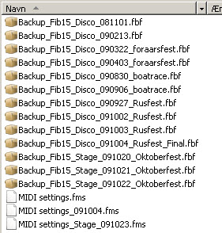
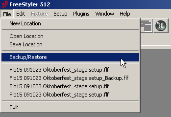
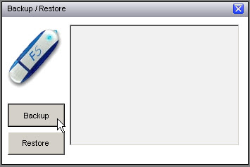
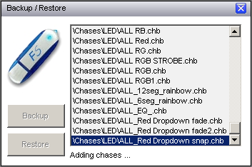
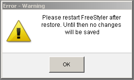

Table of Contents
Backup/Restore Feature
The backup/restore feature allows you to make a backup file of your work in FreeStyler in one file. You can use this feature to back up your shows and/or use it to copy your work to other computers easily instead of copying all the data yourself.

What is saved in the backup file
- Chases/sequences (..\Freestyler\Chases folder)
- Cues (..\Freestyler\Cues folder)
- Location files (..\Freestyler\Location folder)
- Fixture files (with matching image, goboes and colours) for fixtures added to the current location (which is in the ..\Freestyler\Fixtures folder
- Keyboard shortcuts
- Touchscreen setting ( Background, Custom buttons, Placement from everything )
What is NOT saved in the backup file
- MIDI setup
- Fixture files which are not added to the current location
TIP: The backup feature copies all content in the chases, cues, and location folder. You can make a subfolder in one of the mentioned folders and add the desired files. For example: make a subfolder “MIDI settings” in the Location folder, and add the the exported midi settings here. Now the files will be included in the backup file.
TIP: If you use different fixtures for each location, you have to open each location in FreeStyler and make a backup. This is especially important if you have made a change or have created any fixture files for a given location.
OBS: the restore feature will overwrite all the existing files in the FreeStyler directory which has the same name as the files in the backup including configurations.
How to use it
You find the backup/restore function in the “File” menu of FreeStyler

How to make a backup
- Click on the “Backup” button.

- FreeStyler now asks you where to create the backup file and what it should be named.
Now FreeStyler is creating the backup file.

How to restore from a backup
- Click on the “restore” button.
- FreeStyler now asks you to find and select the backup file you want to restore.
FreeStyler restores from the backup file.
- When FreeStyler has finished the restore from the backup it asks you to restart the program

When you restart FreeStyler, it will start in the location you had open when you did the backup.